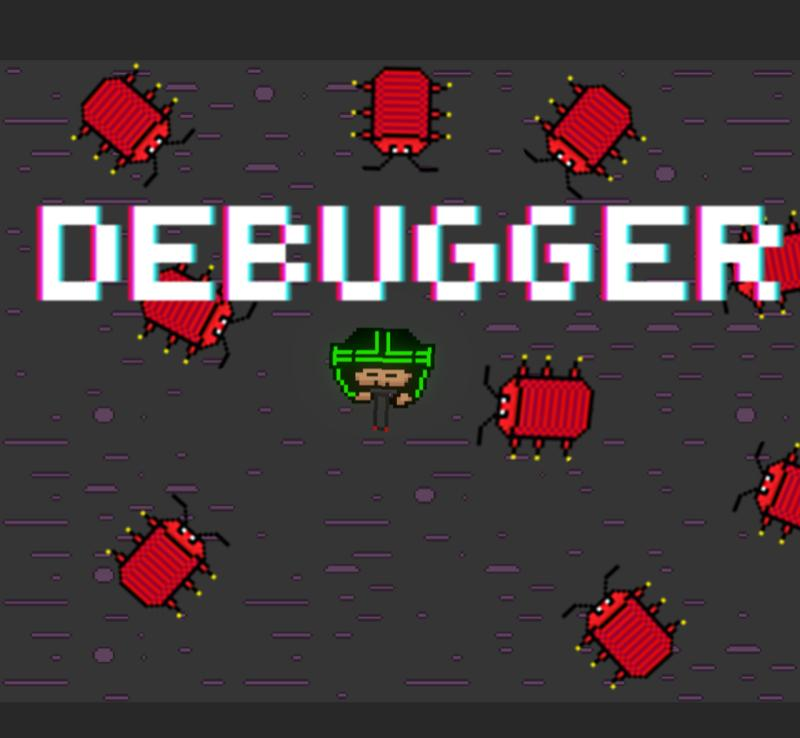

August 30, 2025
Dare Acadamy was an opportunity to improve upon the group work game from 3rd year,
working on it with feedback from mentors from industry
This involved working with the same multi disiplinary group of 8 to take the game further
During the process of creating the final version, I primarily focused on polishing up and building new gameplay mechanics (Throwable distractions, Camera AI)
The project continued to use Jira and Github for source control.
I enjoyed working on a codebases with other programmers aswell as provoiding technical assitance for other discipline areas.
This was my first opprotunity to work with a multidisiplanary team on a larger project.
The goal was to create a game based on a Brief from our mentor - Summer Eternal
To match this brief we created Still Forgotten- A first person surreal narrative stealth game
We developed in a custom version of Godot 4.3 and a mixture of C#& GDScript- using github and Jira to manage the project
I primarily worked on player mechanics (movement state system, throwable distraction and death)
This could be done using fuzzy logic, decision trees or Genetic algorithms
I decided to implement pathfinders using genetic algorthms
I did this within godot using C#
Each generation inherits a randomized choice of the best of the previous generation
The best of the previous generation would be determined by a fitness value
this was calculated based on time and distance travvaled towards the goal.
Freshers Game Jam at the start of my third academic year,
Great opportunity to work with some new faces in from different subject areas to create a 2D platformer.
This was my first time working in godot and i focus on the basic player movement
2nd year Project- using PS5 dev kits and an in house built framework, myself and a group of 3 other programmers created a 2.5D snowboarding game with local co-op.
I worked on loading level chunks with different obstancles and collectable to create 5 bespoke levels

My First Game Jam At Abertay back in 2023 working with fellow first years to make a 2D top down shooter/survival game using unity.

I created a simple numbers based web game version of 21 or blackjack
this involved creating a website using HTML and css and coding in JavaScript
The player played against the dealer(computer).